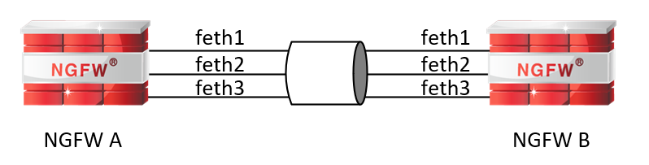
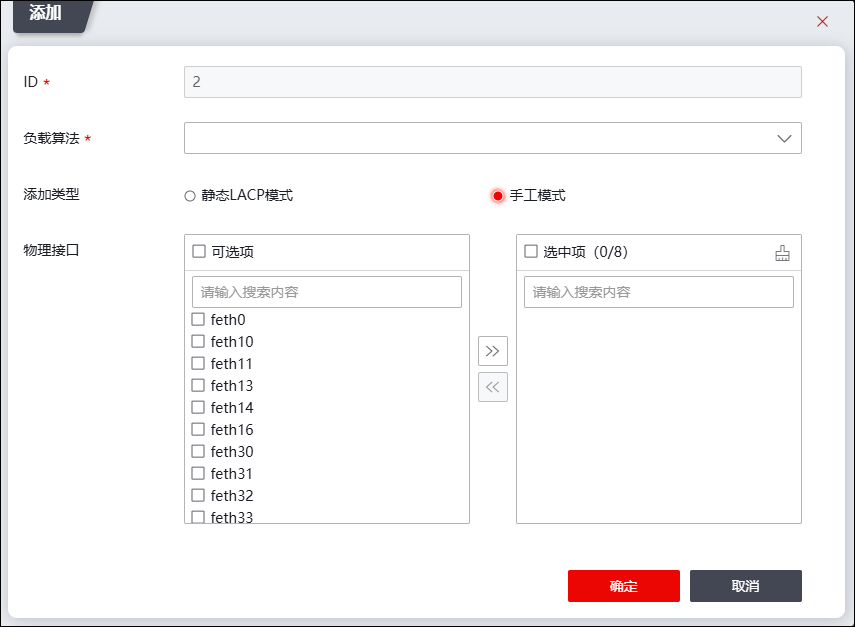

链路聚合功能，是将多个物理接口聚合成一个逻辑上的聚合组。在聚合组中，被捆绑在一起的物理接口称为成员接口，聚合所形成的逻辑接口称为聚合接口。物理接口加入聚合组后，工作模式为BOND模式。需要说明的是：防火墙接口工作在bond模式时，与防火墙bond接口组相连的对端设备的接口也需工作在bond模式下，且防火墙bond接口组中各接口与对端设备bond接口组中各接口的连接形式为端对端连接，如下图所示。

链路聚合有如下优点：
l聚合接口性能接近各个物理接口的性能总和，大大提高端口间的通信速度。
l配置链路聚合功能时，无需重新布线，直接使用现有网络中的设备，减少网络维护工作。
l聚合组内部的物理链路共同完成数据收发任务并相互备份，只要还存在能正常工作的链路，整个聚合组就不会失效，从而提高链路的可靠性。
l聚合组内的成员接口可随时加入或者离开聚合组，管理员可根据实际需求灵活配置。
NGFW支持手工方式链路聚合，手工链路聚合需要手工将物理接口加入到聚合组中，所有的物理接口均处于转发状态，聚合组通过预先设置的负载均衡算法分担链路流量到聚合组中的不同链路，实现链路的负载均衡。
NGFW通过采用不同的负载分担算法选择报文的发送接口，保证具有相同属性的报文能够从同一接口发送，可以灵活地实现对聚合组内业务流量的负载分担。
用户可以指定系统按照报文中携带的端口号、IP地址、MAC地址等信息之一或其组合来选择所采用的负载分担模式。NGFW支持的负载分担算法包括：
lsrc-mac：根据源MAC地址均衡，即对发送的报文的源MAC地址进行哈希计算，根据计算结果选择数据转发接口。
ldst-mac：根据目的MAC地址均衡，即对发送的报文的目的MAC地址进行哈希计算，根据计算结果选择数据转发接口。
lsrc-dst-mac：根据源和目的MAC地址组合均衡，即对发送的报文的源和目的MAC地址进行哈希计算，根据计算结果选择数据转发接口。
lsrc-ip：根据源IP地址均衡，即对发送的报文的源IP地址进行哈希计算，根据计算结果选择数据转发接口。
ldst-ip：根据目的IP地址均衡，即对发送的报文的目的IP地址进行哈希计算，根据计算结果选择数据转发接口。
lsrc-dst-ip：根据源和目的IP地址组合均衡，即对发送的报文的源和目的IP地址进行哈希计算，根据计算结果选择数据转发接口。
lsrc-port：根据源TCP/UDP端口地址均衡，即对发送的报文的源端口进行哈希计算，根据计算结果选择数据转发接口。
ldst-port：根据目的TCP/UDP端口地址均衡，即对发送的报文的目的端口进行哈希计算，根据计算结果选择数据转发接口。
lsrc-dst-port：根据源和目的TCP/UDP端口地址均衡，即对发送的报文的源和目的端口进行哈希计算，根据计算结果选择数据转发接口。
lquinary：根据五元组均衡，即根据源地址、目的地址、源端口、目的端口和IP协议类型进行哈希计算，根据计算结果选择数据转发接口。
lper-packet：根据发送端口进行轮流均衡，即在发送数据时进行轮询，依次使用从第一个到最后一个可用的成员接口。
NGFW支持8个聚合组，每个聚合组最多支持8个成员接口。
|
²在NGFW上，只有路由工作模式的物理接口可以加入到聚合接口中，不支持VLAN虚接口或子接口等其他逻辑接口加入聚合接口中。 ²一个物理接口只能属于一个聚合接口。 ²聚合接口内的物理接口必须具备相同的属性，如相同的速度、单双工模式等。 |

| 步骤1 | 选择 。 |
| 步骤2 | 添加新的聚合接口。 |
1）点击『添加』，添加新的聚合接口，界面如下图所示。

在添加聚合接口时，各项参数的具体说明如下表所示。
参数 |
说明 |
|---|---|
ID |
显示聚合接口的ID号，ID号根据添加聚合接口时序，自动生成。聚合接口命名为bond＋ID号，例如此处显示为“0”，则新添加的bond端口为“bond0”。 |
负载算法 |
设置负载均衡算法，根据计算结果，选择聚合组内不同的物理接口转发流量。可选项： 1）根据源mac地址均衡：对发送报文的源MAC地址进行哈希计算。 2）根据目的mac地址均衡：对发送报文的目的MAC地址进行哈希计算。 3）根据源和目的mac地址组合均衡：表示对发送报文的源和目的MAC地址进行哈希计算。 4）根据源IP地址均衡：对发送报文的源IP地址进行哈希计算。 5）根据目的IP地址均衡：对发送报文的目的IP地址进行哈希计算。 6）根据源和目的IP地址组合均衡：对发送报文的源和目的IP地址进行哈希计算。 7）根据源TCP/UDP端口均衡：对发送报文的源端口进行哈希计算。 8）根据目的TCP/UDP端口均衡：对发送报文的目的端口进行哈希计算。 9）根据源和目的TCP/UDP端口组合均衡：对发送报文的源和目的端口进行哈希计算。 10）根据五元组均衡：对发送报文的源地址、目的地址、源端口、目的端口和IP协议类型进行哈希计算。 11）根据发送端口的轮流均衡：发送报文时进行轮询，依次使用从第一个到最后一个可用的成员接口。 |
工作模式 |
选择接口的模式，可选项：静态LACP模式、手工模式。 1）静态LACP模式：利用LACP协议进行聚合参数协商、确定活动接口和非活动接口的链路聚合方式。该模式下，聚合链路的建立、成员接口的加入依旧需要手工配置，但由LACP协议协商确定活动接口和非活动接口，只有活动接口分担流量。 2）手工模式：聚合链路的建立、成员接口的加入完全由手工来配置。该模式下所有活动链路都参与数据的转发。如果某条活动链路故障，链路聚合组自动在剩余的活动链路中分担流量。 |
物理接口 |
选择将哪些物理接口加入到该聚合接口中。 |
2）参数设置完成后，点击【确定】按钮完成聚合链路添加，新添加的逻辑端口将显示在界面中。
| 步骤3 | 设置聚合接口属性。 |
选中聚合接口列表，点击列表上方的『编辑』，可以设置聚合接口的基本信息、BOND属性和高级信息。
关于属性参数的解释具体请参见 物理接口。加入链路聚合的接口其“接口模式”显示为“SLAVE”。
|
²当物理接口加入聚合接口后，不能直接对该物理接口再进行接口的工作模式、MTU值、MSS值配置，只能启用/禁用接口、修改接口双工模式和速率。聚合接口的工作模式、MTU、MSS等参数的设置需通过配置聚合接口进行设置。 |